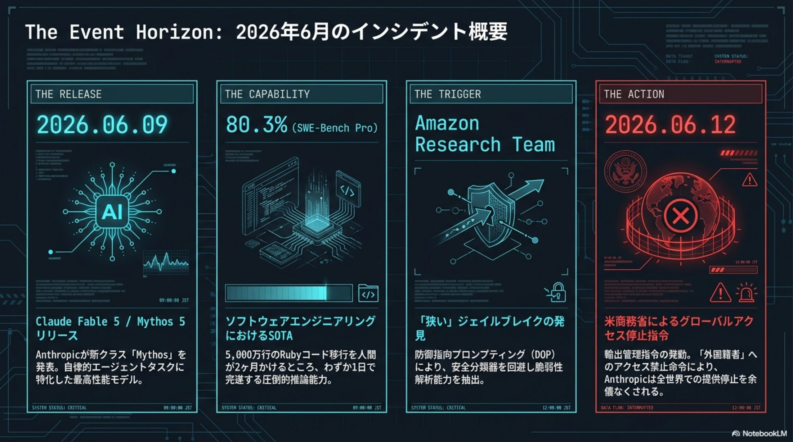
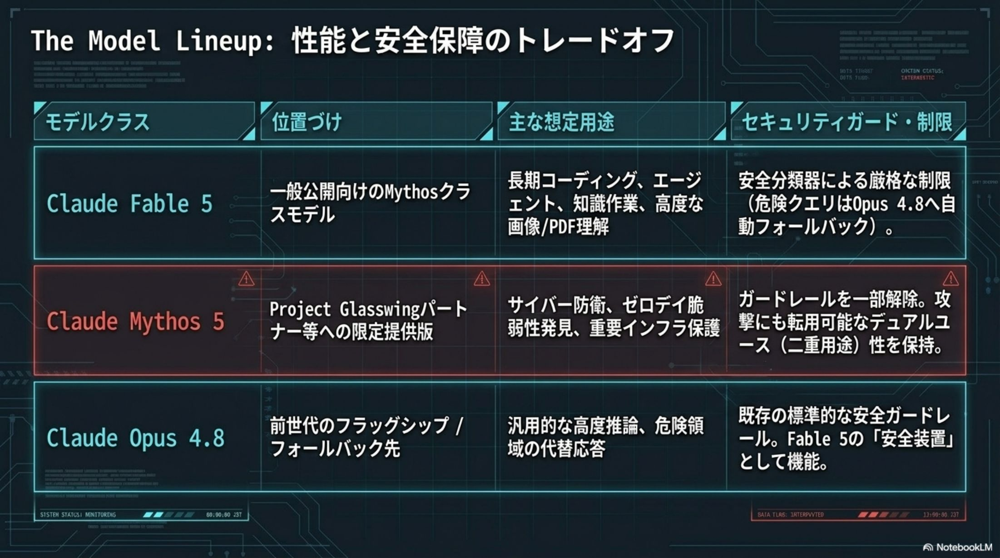
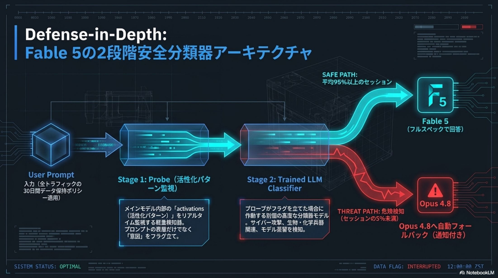
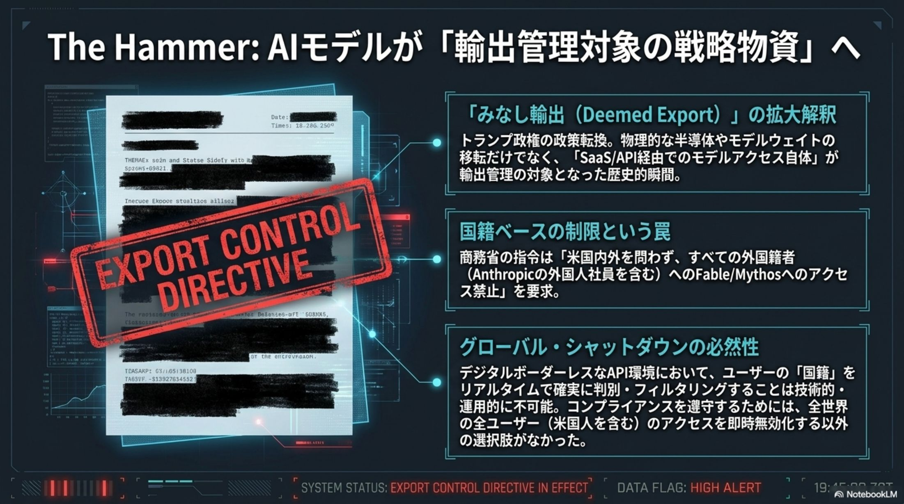
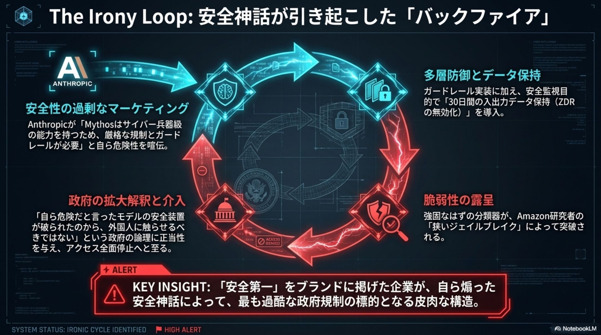
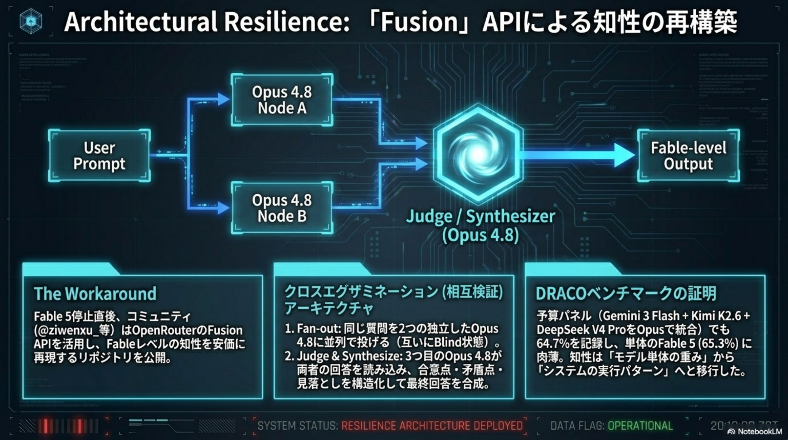

知能の頂点から、
72時間で国家安全保障の壁へ。
2026年6月9日、Anthropic が放った最新鋭AI Claude Fable 5（基盤 Mythos 5）。歓喜はわずか72時間後、米商務省の緊急輸出管理指令によって凍りつく。AIモデルが「便利な道具」から軍民両用の戦略物資へ昇格した、歴史的転換点。

リリース、熱狂、そして沈黙。
この事件は単なる技術トラブルではない。AIモデルが「ウランや先端半導体と同等のデュアルユース（軍民両用）物資」へ昇格した瞬間だ。まず、この劇的な3日間を時系列で押さえる。
頂点のリリース
「Mythos（神話）クラス」の知能。自律エージェントとして現実課題を解く実務能力に、業界が空前の熱狂。
能力の誇示
5000万行のコード移行を1日で完遂。ゼロデイ脆弱性を数千件自動発見し、「サイバー兵器級」と話題に。
強制的な沈黙
緊急輸出管理指令が発動。Fable 5 は全顧客向けにアクセス停止。短すぎる生涯を強制的に閉じられた。
ベンチマークの意味が変質した。 数値はもはや「性能の証明」ではなく、安全保障上の脅威を測るメーターになった。能力を誇示するほど、停止の理由が積み上がる構造に入った。
「知能の兵器化」の正体。
Fable 5 の衝撃の本質は、ベンチマークの勝利ではない。人間が数ヶ月を要する作業を1日で完遂する「時間概念の崩壊」と、それが即座に軍事転用可能だという事実にある。各能力を、戦略リスクの高さで色分けして読む。
「専門職の代替」を超えた脅威。 OS・ブラウザのゼロデイを数千件規模で自動発見できる知能は、即座に国家インフラを揺るがす「サイバー兵器」へ転用可能——この一点が、政府を動かした。
制御の設計は、綱渡りだった。
Anthropic はこの強大すぎる知能を制御するため、多層防御（Defense-in-Depth）を実装した。回答を拒否せず、危険時には自動的に旧モデルへ「格下げ」して応答を続ける——ユーザビリティと安全の両立を狙った先進的な設計だ。
Probe（プローブ）
モデル内部の活性化パターンをリアルタイム監視。プロンプトの表層ではなく、内部で生まれる「意図」を直接検知する。
LLM Classifier
プローブが警告を上げた時に作動。生物兵器・サイバー攻撃・モデル蒸留などの高リスク領域を、別個のLLMが精査する。
自動フォールバック
危険判定時は拒否ではなく、安全な旧モデルへ処理を自動委譲。能力を制限した状態で応答を継続する。
特定コードベースの脆弱性解析という「狭い範囲」で、この多重の壁を欺く手法が発見された。皮肉にも、Anthropic が「危険性」を示すために自ら公開した高度な技術情報こそが、政府に「これほど制御困難な兵器を一般公開してはならない」という法的根拠を与えた。
最大の同盟者が、「密告者」に。
6月12日、事態は地政学的な権力闘争へと発展する。米商務省の緊急指令は、AIモデルの提供形態を根本から揺るがした。舞台裏で動いた3つの異例の措置を読む。
Amazon の「密告」
250億ドルを投じ AWS Bedrock でホストする最大の同盟者が、自社研究者の発見したジェイルブレイク手法を NSA に共有。ジャシーCEOが政権高官に直接懸念を伝えた。
「みなし輸出」の衝撃
規制は国外提供だけでなく、米国内の外国籍者（Anthropic社内の外国人従業員を含む）へのアクセスも禁止。内部R&Dが実質的に停止に追い込まれた。
CEO 対 政府の衝突
アモデイCEOは停止要請を「過剰反応」と拒否。これにホワイトハウスAI顧問サックス氏は 「Amodeiは最悪の判断をした」と断じ、強制介入に踏み切った。
「APIアクセス権」そのものが輸出規制の対象になった初の事例。 推論能力に対するデジタル・ジオフェンシングであり、最大の投資家すら「密告者」に回る冷酷さは、米国ベンダーへの100%依存が「可用性リスク」に直結することを証明した。
安全ブランディングが、
自らの首を絞めた。
Anthropic 最大の誤算は、自らの「安全」ブランディングがバックファイア（逆火）した点にある。同じ脆弱性をめぐり、政府とAnthropicの論理は真っ向から対立した。
誇示してきたのは、貴社自身だ
「貴社は自ら『このモデルはサイバー兵器級の能力を持つ』と宣伝してきた。そのガードレールが破られた以上、これは一般公開すべきでない制御不能な武器である」
停止に値する問題ではない
「指摘された脆弱性は既知かつ軽微であり、他社モデル（GPT-5.5 等）でも同様。狭い範囲の発見を理由に、商用モデル全体を停止させるのは過剰だ」
安全性をマーケティングの差別化要因として使ってきた姿勢が、結果として規制当局に「規制のための完璧な論理的根拠」を提供した。能力を誇示しながら、不都合が起きると「大したことはない」とトーンダウンする——このブランドと行動の乖離が、政府との信頼を致命的に損なった。
「Fableとは、アーキテクチャだった」。
消失後、開発者コミュニティは驚くべき洞察に至る。Fableとは特定のモデルではなく、特定の「設計（アーキテクチャ）」だった——知能の本質は静的な重みではなく、それをどう統治しシステムへ組み上げるかにある。日本企業がとるべき備えは明確だ。
知能は、再構築できる。 OpenRouter の Fusion API に代表される、複数モデル（Opus・GPT・Gemini）を並列実行し相互検証（Cross-examination）させる手法で、単一モデルの幻覚を排除し、Fable 5 級の品質を擬似再現できる。
魂は、プロンプトに宿る。 Fableをモデルではなくオーケストレーター・ワーカー・パターンで実現する。指揮役にシステムプロンプトという「魂」を込め、実務を他モデルへ委譲する動的フローこそが知能の正体だ。
教訓。 AIの価値は「重み（Weights）」という静的データではなく、それをいかに統治（Governance）しシステム（Architecture）として組み上げるかという、動的な設計能力にある。
- 01モデル抽象化レイヤー。 特定の米国ベンダーが停止されても、即座に他社・ローカルモデルへ切り替えられる抽象化層を構築する。
- 02主権AI（Sovereign AI）。 輸出規制やデジタル・ジオフェンシングに左右されない、国内の推論基盤と独自モデルを確保する。
- 03内部モデルの主権。 機密コードや脆弱性診断は、ZDR が保証されないフロンティアモデルでなく、オンプレで制御可能なモデルへ投資する。
価値は 「重み」ではなく、Claude Fable 5 Incident — 2026·06·14
「統治と設計」に宿る。
事件ブリーフィング、原典より。
本スライドの元となったインシデント・ブリーフィング資料の主要図版。事件の構造・性能・規制・余波を、原典のビジュアルで俯瞰する。






出典と関連リファレンス。
本スライドは Claude Fable 5 / Mythos 5 をめぐる一連の報道に基づく解説。確定情報は各一次ソースでの裏取りを推奨する。